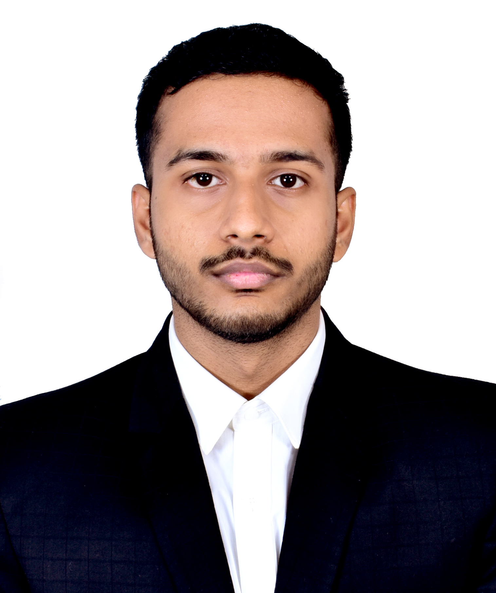
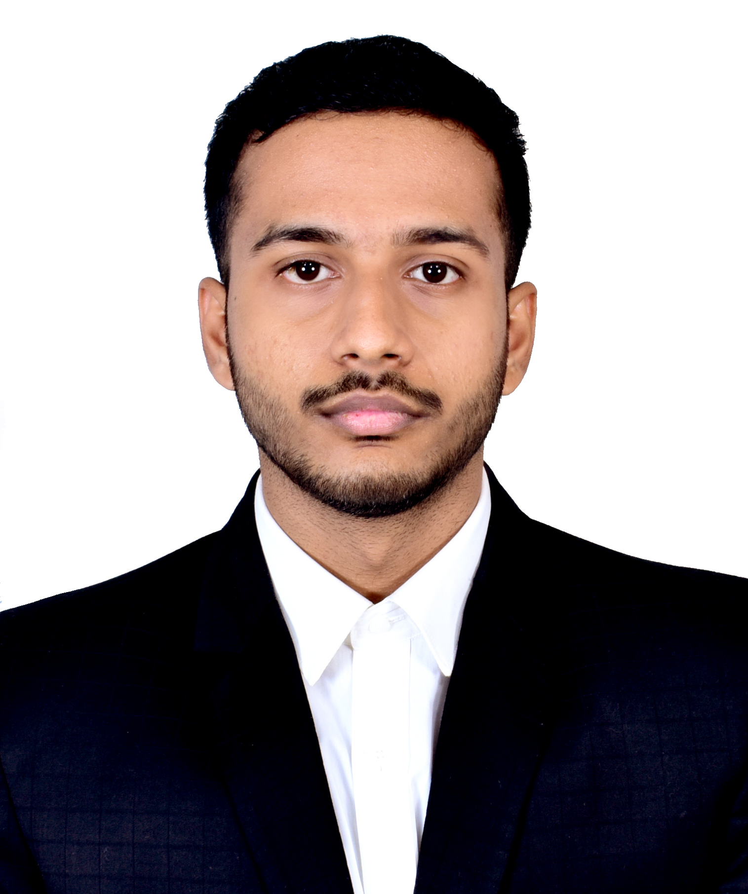

Education
| Year |
Degree/Exam |
Institute |
CGPA/Marks |
| 2026 |
4YRS B.S |
IIT Kharagpur |
8.00/10 |
| 2021 |
Class XII, CBSE |
St. Joseph's School, Skt |
96.4% |
| 2019 |
Class X, CBSE |
St. Joseph's School, Skt |
96.4% |
Projects
Movies Database Website | Open Soft | General Championship 2024 | IIT Kharagpur
[Mar'24 - Apr'24]
- Developed the frontend using ReactJS, HTML5, and CSS-tailwind, enhancing user interface with intuitive navigation and responsive design
- Implemented advanced search functionalities using MongoDB Atlas, including autocomplete, fuzzy search, and semantic search
- Integrated a recommendation system that suggests movies of certain genres based on user's watch history, elevating personalization
- Integrated advanced playback features with secure, multi-resolution streaming based on three levels of subscription tiers
Rubik’s Cube Solver | Korf’s IDA Algorithm | C++ Project
[Apr'23 - May'23]
- Designed a virtual 3x3 Rubik's Cube in C++ using three distinct class models and standard data structures for efficient simulation
- Achieved solving times under 3 seconds for cubes scrambled with 8 moves using optimized BFS, DFS, and IDDFS algorithms
- Implemented Korf's IDA* Algorithm, reducing solving times to under 10 seconds for cubes scrambled with 13 moves
Numerical Methods Lab | IIT Kharagpur
[Jan'24 - Apr'24]
Under the guidance of Prof Naveen Kumar Garg, implemented computational methods to solve complex mathematical problems
- Achieved 92% graphical accuracy by utilizing MATLAB to optimize the code for plotting Newton's and Lagrange Interpolating Polynomial
- Reduced error to 0.8% using numerical algorithms to plot graphs on Boundary Value Problems and Finite Difference methods
Movies Database Website | Open Soft | General Championship 2024 | IIT Kharagpur
[Mar'24 - Apr'24]
Under the supervision of Prof. Subhadip Dey and Prof Brajesh Kumar Panda, developed an Arduino-based project
- Utilized a DHT11 sensor, 0.96-inch LCD 162 I2C display, and an Atomization Humidifier; implemented using Arduino IDE with C++ coding
- Designed circuits using TinkerCad; maintained optimal humidity levels set by the user; received an EX grade for the project
Competition/Conference
National Winner | Data Doyen | Data Analytics Case Study | Passion 2023
[Dec’23]
- Employed Python's Numpy and Pandas to clean and preprocess a dataset of 17K+ customers and 300K+ transactions for analysis
- Utilised Matplotlib and Seaborn on the dataset, revealing key customer behaviours, transaction trends, and offer interactions
- Provided strategic recommendations for Starbucks, leveraging analytics for business optimisation and improved decision-making
Runners Up | Green Canvas | Megalith 2023 | IIT Kharagpur
[Mar'23]
- Developed innovative initiatives for biodiversity hotspot mapping and initiated a collaborative platform for environmental reform
- Proposed a nationwide college competition to engage students in biodiversity conservation research and initiatives
- Advocated for local committees, community employment schemes and ad promotions to empower biodiversity conservation efforts
Skills and Expertise
- Programming Languages: Proficient: C | C++ | Python Familiar: HTML | CSS | JavaScript | SQL | MATLAB
- Libraries: Proficient: C++ Standard Template Library(STL) Familiar: Numpy | Pandas | Matplotlib | Scikit-learn | Seaborn | ReactJS
- Tools/Softwares: Proficient: VS Code | Google Collab | Photoshop | Canva Familiar: FreeCAD | Illustrator | MS Office | Figma
Coursework Information
- Computer Science: Design & Analysis of Algoriths | Computer Architechture & Orgranisation | Theory of Computations | Combinatorics and Graph Theory
- Mathematics: Optimization Techniques | Linear Algebra | Probability and Statistics | Stochastic Process | Transform Calculus | Applied Computational Methods
- Certifications: Data Structures & Algorithms (AlgoZenith) | Machine Learning Specialization (DeepLearning.ai) | Web Development Bootcamp (Udemy by Angela Yu)
Position of Responsibility
Sponsorship Head | Gopali Youth Welfare Society | IIT Kharagpur
[Aug'23-Present]
- Utilized Python tools (Selenium and BeautifulSoup) for LinkedIn scraping to construct an Alumni Database of 1.2K+ Contacts for the NGO
- Raised INR 9.6M (30% YoY) through various channels such as gift matching, fundraising, alumni outreach, and CSR initiatives
- Secured an amount of INR 4.7M (23% YoY) within a span of 2 weeks through Gift Matching Program, reaching 3K+ employees
- Partnered with Pubmatic India for CSR of INR 0.5M and collaborated with Feeding India for hostel yearly food needs of INR 4M
- Guided 20 Junior Executive Members in fundraising efforts, targeting over 500 alumni from more than 6 institutes through calling
Secretary | Communiqué | Technology Students' Gymkhana | IIT Kharagpur
[Aug'23 - Apr'24]
- Spearheaded the second edition of the Global MUN with a participation of over 300+ students (75% YoY) from 30+ colleges
- Led a team of 40 students and organised 18+ career-aiding seminars, witnessing a 50% YoY increase, benefiting over 15k students
- Secured INR 2.5L in funds and goods through corporate deals and sponsorships, effectively supporting event execution and logistics
- Coordinated a weeklong Internship and Placement Bootcamp for 500+ students, which involved 100+ mock interviews
Junior Associate | International Relations Cell | IIT Kharagpur
[Feb'23 - Jul'23]
- Co-organized webinars, including MS/PhD Panel Discussions and GRE/TOEFL sessions, catering to over 5K students; designed newsletters
- Contributed to the Foreign Training Program, resulting in 223 student offers from prestigious universities for research projects
Awards & Acheivements
- Secured a rank among the top 2.21% candidates in JEE Advanced 2022 and attained a percentile of 99.59 in JEE Mains 2022
- Attained a peak rating of 1508 on LeetCode and 1450 on CodeChef (handle: utkrystal_45) and solved 300+ medium to hard problems
- Awarded the Best Volunteer Award (Unit 8) in the NSS Annual Camp 2023 among 600+ NSS Volunteers, exemplifying leadership
- Qualified for National Talent Search Examination (NTSE), 2018 Level-2 (by CBSE), among the top 0.85% of students of class X in India
- Served as the School Captain of St. Joseph's School for the academic session 2020-21; topped Informatics Practices in AISSCE 2021
Extra Curricular Activities
- Actively participated in Inter Hall Illumination and Rangoli 2024 as a member of Vidyasagar Hall of Residence
- Member of the Product Design and Squash Team for Vidyasagar Hall of Residence, competing in the General Championships 2023-24
- Participated in Smart India Hackathon 2023, developing a solution for detecting and reporting fake social media profiles
- Led my school to Silver in NTPC Debate Competition 2020 and Bronze in GK Quiz Josephest 2018; won Gold in Fine Arts
- Represented Communiqué, IIT Kharagpur, at UG Induction Programme 2023, speaking in front of an audience of over 2K freshers
 
